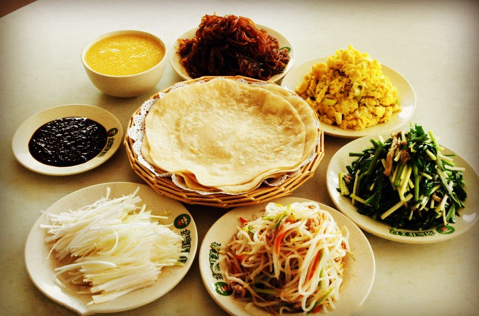
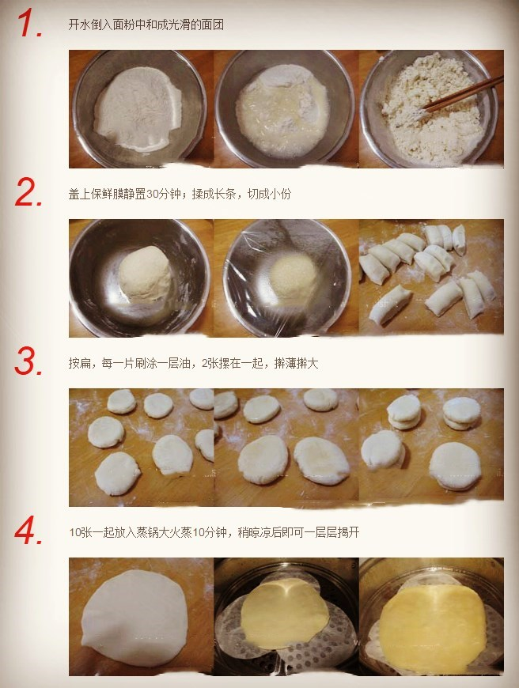

2017-2-24阅读（15,407）


两千多年前的孔子告诫我们“不时，不食”，就是说，不是这个季节的菜果就不吃。时令菜也是“运气菜”。食物一要讲究“气”，一要讲究“味”。因为食物和药物都是由气味组成的，而药物、食物的气味只有在当令时，即生长成熟符合节气的食物，才能得天地之精气。
春季吃什么养生？春令时菜包括有养阳之用的韭菜、助长生机的豆芽、莴苣、葱、豆苗、蒜苗；滋养肝肺的晚春水果，如草莓、青梅、杏、李、桑葚、樱桃等。下面为你介绍春季养生的应季美食春饼及其制作方法。
 春饼（英文：spring pancake）又叫荷叶饼、薄饼，是一种烙得很薄的面饼。是中国的传统美食。它的材料简单，制作方便，口感柔韧耐嚼，吃法也有很多种，卷包配菜、作为主食单吃、炒饼都可以。


学学这些工艺：
和(huò)
他(tā)用(yònɡ)了(le)一(yì)锅(ɡuō)水(shuǐ)去(qù)和(huò)面(miàn)。
He used a pan of water to mix the wheat flour.
揉(róu)
用(yònɡ)手(shǒu)掌(zhǎnɡ)将(jiānɡ)面(miàn)团(tuán)揉(róu)至(zhì)光(ɡuānɡ)滑(huá)为(wéi)止(zhǐ)。
Work the dough with the palm of your hand until it is very smooth.
切(qiē)
把(bǎ)所(suǒ)有(yǒu)切(qiē)好(hǎo)的(de)蔬(shū)菜(cài)放(fànɡ)入(rù)砂(shā)锅(ɡuō)。
Place all the chopped vegetables into a casserole dish.
擀(ɡǎn)
将(jiānɡ)面(miàn)团(tuán)擀(ɡǎn)成(chénɡ)大(dà)的(de)圆(yuán)形(xínɡ)面(miàn)皮(pí)。
Roll out the dough into one large circle.
蒸(zhēnɡ)
你(nǐ)也(yě)可(kě)以(yǐ)蒸(zhēnɡ)面(miàn)皮(pí)。
You could also steam wrapper.
图片来源网络，如有侵权，请联系删除。